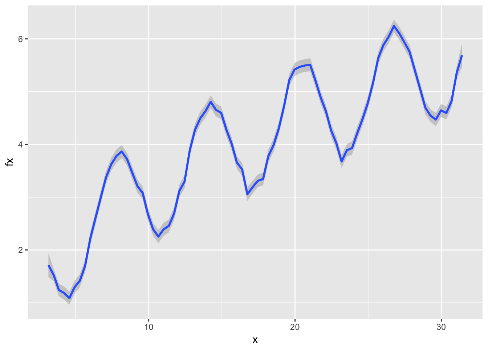
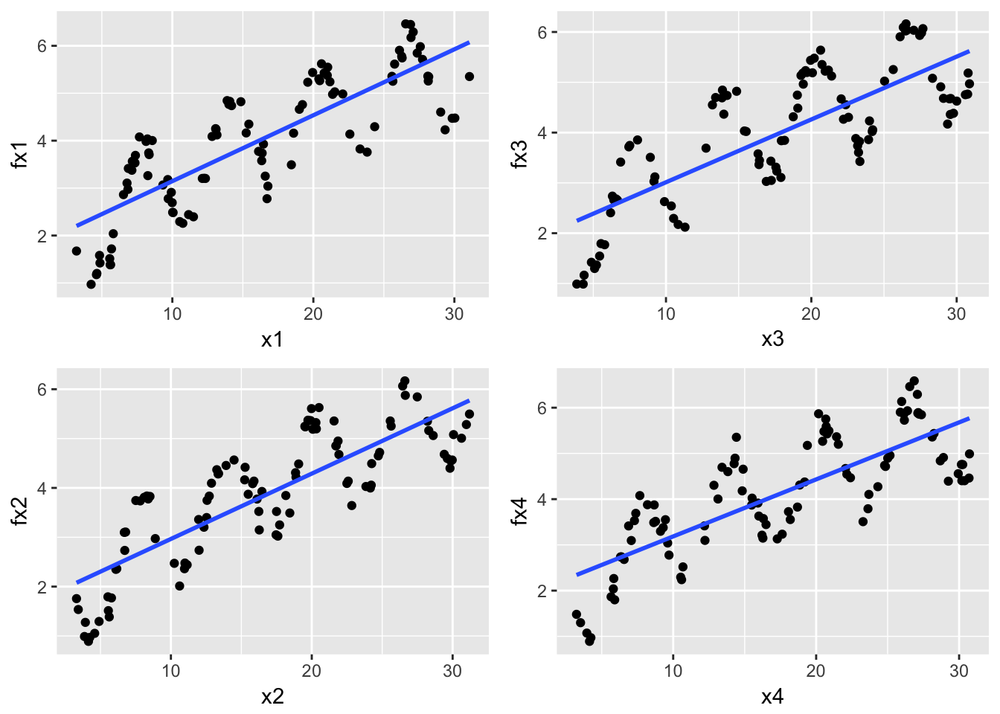

Chapter 7 Model Tuning Technique
7.1 Systematic Error and Random Error
Assume \(\mathbf{X}\) is \(n \times p\) observation matrix and \(\mathbf{y}\) is response variable, we have:
\[\mathbf{y}=f(\mathbf{X})+\mathbf{\epsilon}\]
where \(\mathbf{\epsilon}\) is the random error with a mean of zero. The function \(f(\cdot)\) is our modeling target, which represents the information of Y that can be explained by X. The main goals of estimating \(f(\cdot)\) are inference and prediction, or sometimes both. In general, there is a trade-off between flexibility and interpretability of the model. So data scientists need to comprehend the delicate balance between the two.
Depending on the modeling purposes, the requirement for interpretability varies. If the prediction is the only goal, then as long as the prediction is accurate enough, the interpretability is not under consideration. In this case, people often use “black box” model, such as random forest, boosting tree, neural network, support vector machine and so on. These models are very flexible but nearly impossible to explain. Their predictive accuracy is usually higher on the training set, but not necessary when it predicts. It is not surprising since those models have a huge number of parameters and high flexibility that they can memorize the entire training data. A paper by Chiyuan Zhang et. al. in 2017 pointed out that “Deep neural networks (even just two-layer net) easily fit random labels” (Chiyuan Zhang 2017). The traditional forms of regularization, such as weight decay, dropout, and data augmentation, fail to control generalization error. It poses a conceptual challenge to statistical theory and also calls our attention when we use such black-box models.
Assume we have \(\hat{f}\) which is an estimator of \(f\). Then we can further get \(\mathbf{\hat{y}}=\hat(f)(\mathbf(X))\). The predicted error is divided into two parts, systematic error and random error:
\[ E(\mathbf{y}-\hat{\mathbf{y}})^{2}=E[f(\mathbf{X})+\mathbf{\epsilon}-\hat{f}(\mathbf{X})]^{2}=\underset{\text{(1)}}{\underbrace{E[f(\mathbf{X})-\hat{f}(\mathbf{X})]^{2}}}+\underset{\text{(2)}}{\underbrace{Var(\mathbf{\epsilon})}} \label{eq:error}\]
In the above equation, (1) is the systematic error, It exists because \(\hat{f}\) usually does not completely model the “systematic relation” between X and y, where the system relation refers to the stable relationship that exists on different samples. This part of the error can be improved by improving the model; (2) is the random error which represents the part of the response that can not be explained by current input data. A more complex model does not reduce the error. The biggest problem with black-box models is to fit random error as well, i.e., over-fitting. The notable feature of random error is that it can not be repeated on different samples. So a way to determine whether there is overfitting is to reserve a part of the sample as a test set and then check the performance of the trained model on the test data. Note that overfitting is a general problem, and any model may be overly fitted. Because black-box model usually has a large number of parameters, it is more suspectable to over-fitting.

The systematic error can be further decomposed as:
\[ \begin{array}{ccc} E[f(\mathbf{X})-\hat{f}(\mathbf{X})]^{2} & = & E\left(f(\mathbf{X})-E[\hat{f}(\mathbf{X})]+E[\hat{f}(\mathbf{X})]-\hat{f}(\mathbf{X})\right)^{2}\\ & = & E\left(E[\hat{f}(\mathbf{X})]-f(\mathbf{X})\right)^{2}+E\left(\hat{f}(\mathbf{X})-E[\hat{f}(\mathbf{X})]\right)^{2}\\ & = & [Bias(\hat{f}(\mathbf{X}))]^{2}+Var(\hat{f}(\mathbf{X})) \end{array} \]
The systematic error consists of two parts, \(Bias(\hat{f}(\mathbf{X}))\) and \(Var (\hat{f}(\mathbf{X}))\). To minimize the systematic error, we need to minimize the bias and variance. The bias represents the error caused by the approximation of the reality of the model, which may be very complex. For example, linear regression assumes that there is a linear relationship between the independent variable and the response, but the perfect linear relationship in real life is not common. The relationship between x and fx in the following figure is non-linear. Therefore, despite a large sample size, linear regression can not give the accurate prediction. In other words, in this case, the prediction of the linear regression model has a high bias.
library(grid)
library(lattice)
library(ggplot2)
source("https://raw.githubusercontent.com/happyrabbit/DataScientistR/master/R_Code/multiplot.r")
# randomly simulate some non-linear samples
x=seq(1,10,0.01)*pi
e=rnorm(length(x),mean=0,sd=0.2)
fx<-sin(x)+e+sqrt(x)
dat=data.frame(x,fx)
# plot fitting result
ggplot(dat,aes(x,fx))+
geom_point() +
geom_smooth(method = "lm", se = FALSE)The estimated parameters will be different for the different training data. Intuitively, the estimated variance indicates that if we fit the same model with different data sets, how much the estimated results will change. Ideally, the change is small. For high variance models, small changes in the training data result in very different estimates. In general, a model with high flexibility also has high variance., such as the CART tree, and the initial boosting method. The Random Forest and Gradient Boosting Model aim to reduce the variance by summarizing the results obtained on different samples.
The blue curve in the figure below is obtained by fitting the above nonlinear observations by a smoothing method, which is highly flexible and can fit the current data tightly:
ggplot(dat,aes(x,fx))+geom_smooth(span = 0.03)## `geom_smooth()` using method = 'loess' and formula 'y ~ x'
However, this method has a high variance, and if we simulate different subsets of the sample, the result curve will change significantly:
# set random seed
set.seed(2016)
# sample part of the data to fit model
# sample 1
idx1=sample(1:length(x),100)
dat1=data.frame(x1=x[idx1],fx1=fx[idx1])
p1=ggplot(dat1,aes(x1,fx1))+geom_smooth(span = 0.03)
# sample 2
idx2=sample(1:length(x),100)
dat2=data.frame(x2=x[idx2],fx2=fx[idx2])
p2=ggplot(dat2,aes(x2,fx2))+geom_smooth(span = 0.03)
# sample 3
idx3=sample(1:length(x),100)
dat3=data.frame(x3=x[idx3],fx3=fx[idx3])
p3=ggplot(dat3,aes(x3,fx3))+geom_smooth(span = 0.03)
# sample 4
idx4=sample(1:length(x),100)
dat4=data.frame(x4=x[idx4],fx4=fx[idx4])
p4=ggplot(dat4,aes(x4,fx4))+geom_smooth(span = 0.03)
multiplot(p1,p2,p3,p4,cols=2)## `geom_smooth()` using method = 'loess' and formula 'y ~ x'
## `geom_smooth()` using method = 'loess' and formula 'y ~ x'
## `geom_smooth()` using method = 'loess' and formula 'y ~ x'
## `geom_smooth()` using method = 'loess' and formula 'y ~ x'Fitting the linear model using the same four subsets, the result barely changes:
p1=ggplot(dat1,aes(x1,fx1))+
geom_point() +
geom_smooth(method = "lm", se = FALSE)
p2=ggplot(dat2,aes(x2,fx2))+
geom_point() +
geom_smooth(method = "lm", se = FALSE)
p3=ggplot(dat3,aes(x3,fx3))+
geom_point() +
geom_smooth(method = "lm", se = FALSE)
p4=ggplot(dat4,aes(x4,fx4))+
geom_point() +
geom_smooth(method = "lm", se = FALSE)
multiplot(p1,p2,p3,p4,cols=2)
In general, the variance (\(Var(\hat{f}(\mathbf{X}))\)) increases and the bias (\(Bias(\hat{f}(\mathbf{X}))\)) decreases as the model flexibility increases. Variance and bias together determine the systematic error (or mean square error, MSE). As we increase the flexibility of the model, at first the rate at which \(Bias(\hat{f}(\mathbf{X}))\) decreases is faster than \(Var (\hat{f} (\mathbf{X}))\), so the MSE decreases. However, to some degree, higher flexibility has little effect on \(Bias(\hat{f}(\mathbf{X}))\) but \(Var (\hat{f} (\mathbf{X}))\) increases significantly, so the MSE increases.
7.1.1 Measurement Error in the Response
The random error (\(\mathbf{\epsilon}\)) reflects the measurement error in the response. This part of the error is irreducible, and so it makes the root mean square error (RMSE) and \(R^2\) have the corresponding upper and lower limits. RMSE and \(R^2\) are commonly used performance measures for the regression model which we will talk in more detail later. Therefore, the random error term not only represents the part of fluctuations the model can not explain but also contains measurement error in the response variables. Section 20.2 of Applied Predictive Modeling (Max Kuhn 2013) has an example that shows the effect of the measurement error in the response variable on the model performance (RMSE and \(R^2\)).
The authors increased the error in the response proportional to a base level error which was gotten using the original data without introducing extra noise. Then fit a set of models repeatedly using the “contaminated” data sets to study the change of \(RMSE\) and $R^2 $ as the level of noise. Here we use clothing consumer data for a similar illustration. Suppose many people do not want to disclose their income and so we need to use other variables to establish a model to predict income. We set up the following model:
# load data
sim.dat <- read.csv("https://raw.githubusercontent.com/happyrabbit/DataScientistR/master/Data/SegData.csv ")
ymad<-mad(na.omit(sim.dat$income))
# calculate z-score
zs<-(sim.dat$income-mean(na.omit(sim.dat$income)))/ymad
# which(na.omit(zs>3.5)): identify outliers
# which(is.na(zs)): identify missing values
idex<-c(which(na.omit(zs>3.5)),which(is.na(zs)))
# delete rows with outliers and missing values
sim.dat<-sim.dat[-idex,]
fit<-lm(income~store_exp+online_exp+store_trans+online_trans,data=sim.dat)The output shows that without additional noise, the root mean square error (RMSE) of the model is 29567, \(R^2\) is 0.6.
Let’s add various degrees of noise (0 to 3 times the RMSE) to the variable income:
\[ RMSE \times (0.0, 0.5, 1.0, 1.5, 2.0, 2.5, 3.0) \]
noise<-matrix(rep(NA,7*nrow(sim.dat)),nrow=nrow(sim.dat),ncol=7)
for (i in 1:nrow(sim.dat)){
noise[i,]<-rnorm(7,rep(0,7),summary(fit)$sigma*seq(0,3,by=0.5))
}We then examine the effect of noise intensity on \(R^2\) for models with different complexity. The models with complexity from low to high are ordinary linear regression, partial least square regression(PLS), multivariate adaptive regression spline (MARS), support vector machine (SVM, the kernel function is radial basis function), and random forest.
# fit ordinary linear regression
rsq_linear<-rep(0,ncol(noise))
for (i in 1:7){
withnoise<-sim.dat$income+noise[,i]
fit0<-lm(withnoise~store_exp+online_exp+store_trans+online_trans,data=sim.dat)
rsq_linear[i]<-summary(fit0)$adj.r.squared
}PLS is a method of linearizing nonlinear relationships through hidden layers. It is similar to the principal component regression (PCR), except that PCR does not take into account the information of the dependent variable when selecting the components, and its purpose is to find the linear combinations (i.e., unsupervised) that capture the most variance of the independent variables. When the independent variables and response variables are related, PCR can well identify the systematic relationship between them. However, when there exist independent variables not related to response variable, it will undermine PCR’s performance. And PLS maximizes the linear combination of dependencies with the response variable. In the current case, the more complex PLS does not perform better than simple linear regression.
# pls: conduct PLS and PCR
library(pls)
rsq_pls<-rep(0,ncol(noise))
# fit PLS
for (i in 1:7){
withnoise<-sim.dat$income+noise[,i]
fit0<-plsr(withnoise~store_exp+online_exp+store_trans+online_trans,data=sim.dat)
rsq_pls[i]<-max(drop(R2(fit0, estimate = "train",intercept = FALSE)$val))
}# earth: fit mars
library(earth)
rsq_mars<-rep(0,ncol(noise))
for (i in 1:7){
withnoise<-sim.dat$income+noise[,i]
fit0<-earth(withnoise~store_exp+online_exp+store_trans+online_trans,data=sim.dat)
rsq_mars[i]<-fit0$rsq
}# caret: awesome package for tuning predictive model
library(caret)
rsq_svm<-rep(0,ncol(noise))
# Need some time to run
for (i in 1:7){
idex<-which(is.na(sim.dat$income))
withnoise<-sim.dat$income+noise[,i]
trainX<-sim.dat[,c("store_exp","online_exp","store_trans","online_trans")]
trainY<-withnoise
fit0<-train(trainX,trainY,method="svmRadial",
tuneLength=15,
trControl=trainControl(method="cv"))
rsq_svm[i]<-max(fit0$results$Rsquared)
}# randomForest: random forest model
library(randomForest)
rsq_rf<-rep(0,ncol(noise))
# ntree=500 number of trees
# na.action = na.omit ignore missing value
for (i in 1:7){
withnoise<-sim.dat$income+noise[,i]
fit0<-randomForest(withnoise~store_exp+online_exp+store_trans+online_trans,data=sim.dat,ntree=500,na.action = na.omit)
rsq_rf[i]<-tail(fit0$rsq,1)
}
library(reshape2)
rsq<-data.frame(cbind(Noise=c(0.0, 0.5, 1.0, 1.5, 2.0, 2.5, 3.0),rsq_linear,rsq_pls,rsq_mars,rsq_svm,rsq_rf))
rsq<-melt(rsq,id.vars="Noise",measure.vars=c("rsq_linear","rsq_pls","rsq_mars","rsq_svm","rsq_rf"))library(ggplot2)
ggplot(data=rsq, aes(x=Noise, y=value, group=variable, colour=variable)) +
geom_line() +
geom_point()+
ylab("R2")
Figure 7.1: Test set \(R^2\) profiles for income models when measurement system noise increases. The models are linear regression (rsq_linear), Partial Least Square (rsq_pls), Multiple Adaptive Regression Spline Regression (rsq_mars), Support Vector Machine (rsq_svm)，Random Forest (rsq_rf)
Fig. 7.1 shows that:
All model performance decreases sharply with increasing noise intensity. To better anticipate model performance, it helps to understand the way variable is measured. It is something need to make clear at the beginning of an analytical project. A data scientist should be aware of the quality of the data in the database. For data from the clients, it is an important to understand the quality of the data by communication.
More complex model is not necessarily better. The best model in this situation is MARS, not random forests or SVM. Simple linear regression and PLS perform the worst when noise is low. MARS is more complex than linear regression and PLS, but it is simpler and easier to explain than random forest and SVM.
When noise increases to a certain extent, the potential structure becomes vaguer, and complex random forest model starts to fail. When the systematic measurement error is large, a simpler but not naive model may be a better choice. It is always a good practice to try different models, and select the simplest model in the case of similar performance. Model evaluation and selection represent the career “maturity” of a data scientist.
7.1.2 Measurement Error in the Independent Variables
The traditional statistical model usually assumes that the measurement of the independent variable has no error which is not possible in practice. Considering the error in the independent variables is necessary. The impact of the error depends on the following factors: (1) the magnitude of the randomness; (2) the importance of the corresponding variable in the model, and (3) the type of model used. Use variable online_exp as an example. The approach is similar to the previous section. Add varying degrees of noise and see its impact on the model performance. We add the following different levels of noise (0 to 3 times the standard deviation) toonline_exp:
\[\sigma_{0} \times (0.0, 0.5, 1.0, 1.5, 2.0, 2.5, 3.0)\]
where \(\sigma_{0}\) is the standard error of online_exp.
noise<-matrix(rep(NA,7*nrow(sim.dat)),nrow=nrow(sim.dat),ncol=7)
for (i in 1:nrow(sim.dat)){
noise[i,]<-rnorm(7,rep(0,7),sd(sim.dat$online_exp)*seq(0,3,by=0.5))
}Likewise, we examine the effect of noise intensity on different models (\(R^2\)). The models with complexity from low to high are ordinary linear regression, partial least square regression(PLS), multivariate adaptive regression spline (MARS), support vector machine (SVM, the Kernel function is radial basis function), and random forest. The code is similar as before so not shown here.
Figure 7.2: Test set \(R^2\) profiles for income models when noise in online_exp increases. rsq_linear is linear regression, rsq_pls is Partial Least Square, rsq_mars is Multiple Adaptive Regression Spline Regression, rsq_svm is Support Vector Machine，rsq_rf is Random Forest
Comparing Fig. 7.2 and Fig. 7.1, the influence of the two types of error is very different. The error in response can not be overcome for any model but it is not the case for the independent variables. Imagine an extreme case, if online_exp is completely random, that is, no information in it, the impact on the performance of random forest and support vector machine is marginal. Linear regression and PLS still perform similarly. With the increase of noise, the performance starts to decline faster. After a certain extent, it becomes steady. In general, if an independent variable contains error, other variables associated with it can compensate to some extent.
7.2 Data Splitting and Resampling
Those highly adaptable models can model complex relationships. However, they tend to overfit which leads to the poor prediction by learning too much from the data. It means that the model is very sensitive to the exact sample used to fit it. When future data is not exactly like the past data, the model prediction may have large mistakes. A simple model like ordinary linear regression tends instead to underfit which leads to the poor prediction by learning too little from the data. It systematically over-predicts or under-predicts the data regardless of how well future data resemble past data. Without evaluating models, the modeler will not know about the problem until the future samples come. Data splitting and resampling are fundamental techniques to build sound models for prediction.
Data splitting is to put part of the data aside as testing set (or Hold-outs, out of bag samples) and use the rest for model training. Training samples are also called in-sample. Model performance metrics evaluated using in-sample are retrodictive not predictive.
The traditional business intelligence usually handles data description. Answer simple questions by querying and summarizing the data, such as:
- What is the monthly sales of a product in 2015?
- What is the number of visits to our site in the past month?
- What is the sales difference in 2015 for two different product designs?
There is no need to go through the tedious process of splitting the data, tuning and testing model to answer questions of this kind. Instead, people usually use as complete data as possible and then sum or average the parts of interest.
Many models have parameters which cannot be directly estimated from the data, such as \(\lambda\) in the lasso (penalty parameter), the number of trees in the random forest. This type of model parameter is called tuning parameter, and there is no analytical formula available to calculate the optimizing value. Tuning parameters often control the complexity of the model. Poor choice for the values can result in over-fitting or under-fitting. A standard approach to estimate tuning parameters is through cross-validation which is a data resampling approach.
Since to get reasonable precision of the performance values on a single test set, the size of the test set may need to be large. So more often, people will instead resample the training set. Data resampling operates similarly: use a subset of samples to fit a model and use the rest to evaluate model performance. This process will repeat multiple times to get a performance profile. In that sense, resampling is based on splitting. The general steps are:
- Define a set of candidate values for tuning parameter(s)
- For each candidate value in the set
- Resample data
- Fit model
- Predict hold-out
- Calculate performance
- For each candidate value in the set
- Aggregate the results
- Determine the final tuning parameter
- Refit the model with the entire training set

We have outlined above the general procedure to tune parameters. Now let’s focus on the critical part of the process: data splitting.
References
Chiyuan Zhang, Moritz Hardt, Samy Bengio. 2017. “Understanding Deep Learning Requires Rethinking Generalization.” ArXiv:1611.03530.
Max Kuhn, Kjell Johnston. 2013. Applied Predictive Modeling. Springer.